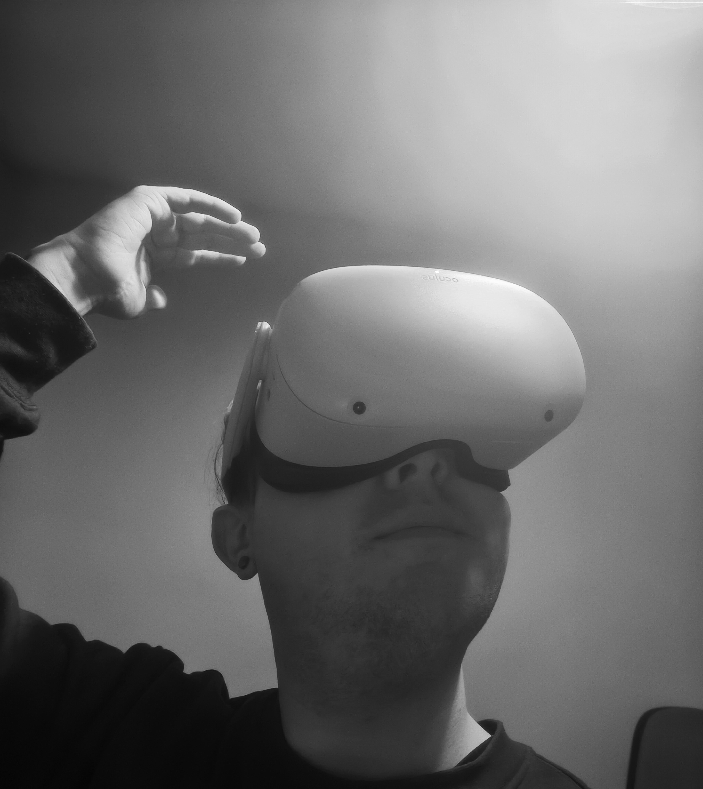

Kiefer Smith
Junior Game Designer



Game Designer & Unity Developer
An ongoing MSc capstone project developed in Unity, where players guide a brave squirrel through handcrafted woodland environments, collecting acorns, avoiding hazards, and rescuing its family from a hungry fox.
In Development
View Case Study →This was a 2 week project designed for Meta VR headsets. This was made in Unity.
View Project →This was a 2 week project designed for Android mobile. This was made in Unity.
View Project →This was a 2 week project designed for Android mobile. This was made in Unity.
View Project →This was a year long project designed for PC. It was made in Unreal Engine 4. The game was my final year project for my bachelors degree, and I was responsible for all design aspects of the game.
View Project →MSc of Science in Creative Digital Media
BA in Creative Media
Junior Game Designer specialising in level design and gameplay systems.
Focused on structured player flow, mechanic clarity, and immersive environments. I design playable spaces that guide players naturally through pacing, progression, and environmental storytelling.
My work centers around building intuitive systems and readable layouts that balance challenge, exploration, and immersion.
Currently completing an MSc in Creative Digital Media, continuing to refine my approach to design, iteration, and implementation.